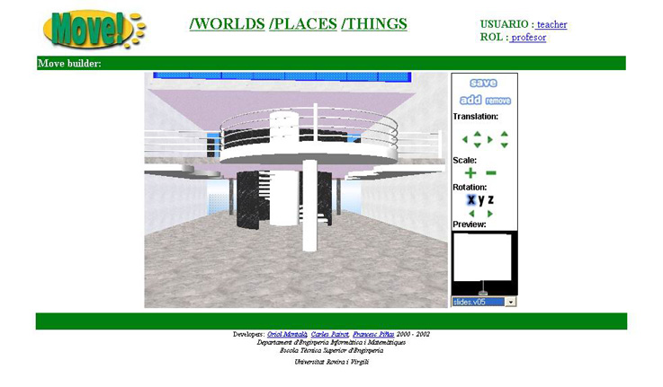

3.13 Builder
La Tool Builder nos permitir� personalizar nuestros Places para que tengan el aspecto deseado.
Podremos a�adir dos tipos de objetos diferentes al Place:
- objetos estaticos: Objetos tales como sillas, mesas, lamparas, etc, que siempre se cargaran en el Place una vez hayan sido a�adidos.
- objetos dinamicos: Objetos tales como pantallas de transparencias, equipos de musica, equipos de video, etc, los cuales correspondran a los modelos 3D de las Tools, y que se cargaran dinamicamente en el Place, dependiendo de si la Tool a la que representan est� activa o no.
El aspecto del Builder es el siguiente:

Por un lado tenemos el entorno 3D que representa nuestro Place.
Por el otro tenemos los controles que nos ofrece la Tool para poder interactuar con el Place.
A continuaci�n describiremos brevemente todo no que nos ofrece el control del Builder: